Bar setup
The importance of the Set-Up is so great that if you don’t do it right and on time, your service and performance will suffer greatly. It is very useful to take the right amount of time to get prepared and ready. In every restaurant the kitchen spends most of its time preparing for the time of heavy business. The preparation cooks work full shifts cutting, stewing, peeling, marinating and so on. A good bar is no different. Assign your bar back his part of the set up, but the most important parts you have to do yourself.
The condition of your bar mirrors the establishment where you work like your house portraits you. It goes without saying that a clean and well-maintained bar is far more inviting than a neglected one. Let’s not forget that a bar is a place where people consume drinks and food and it just has to be clean and spotless. Clean your bar thoroughly and in detail. A zinc, brass or stainless steel bar is best maintained with fresh squeezed lemon juice. Pour the juice on the bar; apply it evenly on the surface. Take a soft linen cloth and rub it in. Continue rubbing until the zinc gets shiny and clean. Remember even water leaves stains on zinc and brass so you have to perform the cleaning ritual on daily basis. If not treated the right way, the zinc and brass will age and develop a patina that would be very hard to clean at that point.
The draft beer and beer tap system: clean handles, towers and make sure you let every tap run for a few seconds allowing it to get rid of the air in the system. Soak your soda gun at the end of every night to remove the sugars and clogs. Clean your condiment containers and replace your Store & Pour Containers. Take a look at your glassware and tools. Clean them properly or they will look unpleasant for service. Fruit flies are a big nuisance and will definitely show up at your bar if you don’t take preventive measures. The best way to do it is to keep the speedwells, shelves, cabinets and back bar clean. Further it helps to bleach the bar floor, sinks, drains and ice wells to prevent the flies from nesting and feeding on pieces of fruit that are left in the hard to reach corners of the bar. With the approach of warmer weather you might want to switch all your speed pourers to the screen pourers. These are plastic pourers and usually come in different colors but the beautiful thing about them is that they have a tiny mesh on the top of the spout thereby preventing the flies of getting into their favorite spirit or fortified wine of choice.
The New York State Health Department regulates that every food service establishment should keep a bucket with bleach solution available for cleaning.
The importance of the Restock is great. Too much and it will crowd your bar, not enough and you might find yourself in a desperate position in the middle of a busy night. Start with restocking glassware, dry goods (olives, cherries, sugar, salt, toothpicks, straws, stirrers, canned juices, coffee, espresso, etc.), juices and mise en place items. Then move on to restock well liquor and most popular spirits and mixers you usually go through a night.
Place the Restock accordingly with you Bar’s layout and space. Do not leave full bottles of liquor all over the floor, it will slow you down and you might eventually break them. We believe in replacing every bottle on the shelving or displays that has been used, meaning not being full, before we start. It looks much better and gives an impression of care and lushness.
Again the analogy with the kitchen is the point to stress out in this part of the set up. You need to cut your garnishes, squeeze your juices, store them properly, prepare garbage bins, glass racks, bus tubs and waste buckets. Take your time with the preparation, but do it with discipline and care.
Cutting Citrus Fruits: Please use common sense. When cutting Limes & Lemons for garnish first cut of the ends of the fruits – the so-called “nipples”. Then cut the fruit lengthwise in half and cut a slit in a 90-degree angle to the vertical line. Then cut each half in three equal wedges. You’ll get 6 half moon shaped wedges to a fruit each with a prepared slit so it can fit on the rim of a glass. When cutting citrus fruit for muddling cut the fruit in half and then each half into quarters.
Orange half-wheels: Again cut the ends of the orange. Then cut it lengthwise in half. Cut a shallow slit lengthwise in the orange. Now turn it around and cut the half orange in 5 half wheels.
Twists are short ribbons of peel stripped from a lemon or orange. The aromatic oils that lie within add a hint of bitterness and flavor to a cocktail. The first step in making twists is to take the lemon (or orange), cut the ends off. Next for lemons, using your paring knife, score the peel of the fruit from top to bottom. For oranges using your knife cut circle shaped peels. You want to keep as close to the peel as possible, leaving most of the pith (white part of the peel) behind. Like its namesake you must twist it. So many bartenders simply drop it into a drink without twisting it. Twisting it is what really releases the oils that will accent your cocktail.
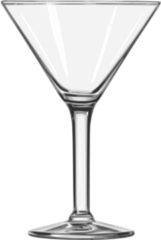
Martini glass
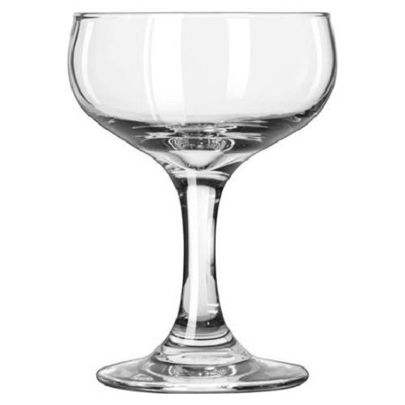
Goblet
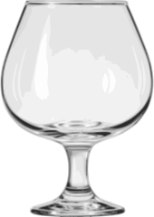
Brandy Snifter
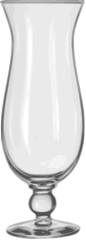
Hurricane glass
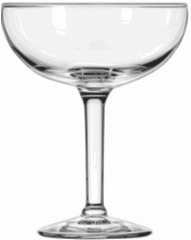
Margarita glass
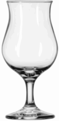
Poco Grande
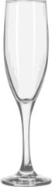
Flute glass
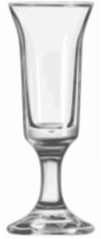
Cordial Glass (Footed)
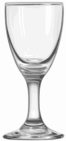
Sherry glass
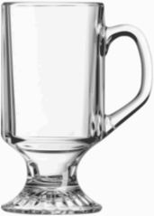
Irish Coffee Glass
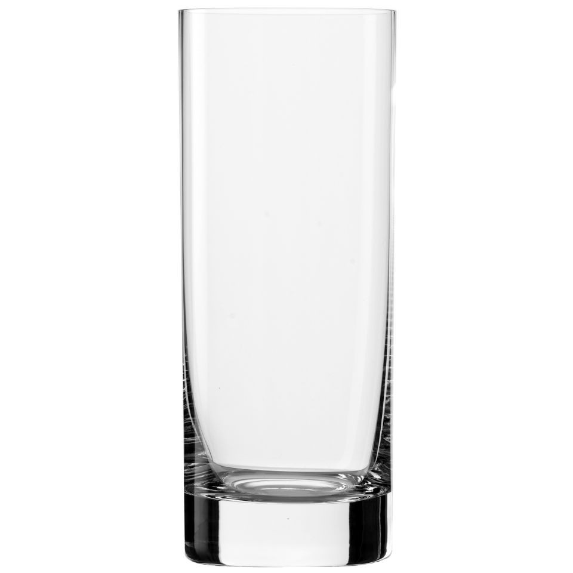
Collins Glass
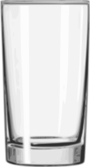
Highball Glass
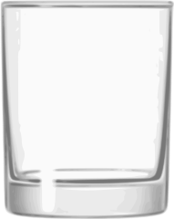
Old Fashioned Glass
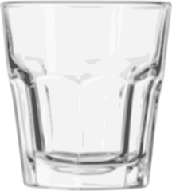
Rocks Glass
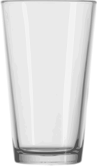
Pint Glass
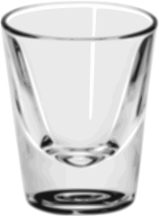
Shooter/Shot Glass
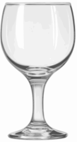
Wine Glass (Red)
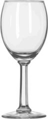
Wine Glass (White)
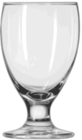
Goblet Glass (Banquet)
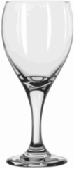
Goblet Glass (Teardrop)
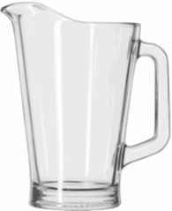
Pitcher (Beer)
Like every craftsman to complete the task, you’ll need the right tools.
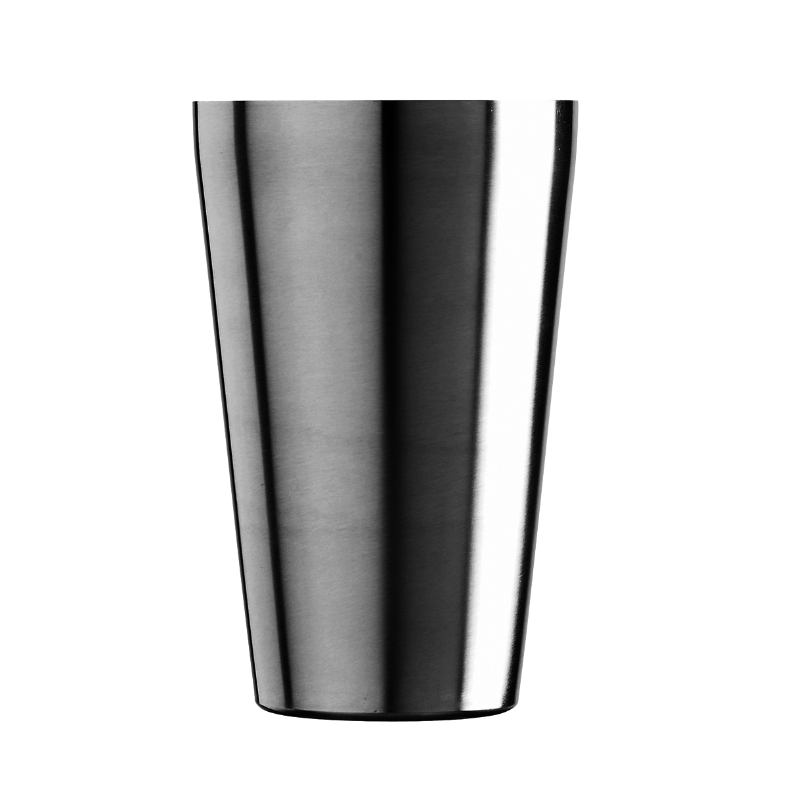Boston ShakerBoston shaker consists of a 16 oz. glass shaker, which can and should be used as a mixing glass, and a 22 oz. metal tin or can. Since the mixing glass is smaller than the shaker, and in order to make the drinks correctly, never fill the mixing glass up to the rim. Although we will never advice you to do so, that means that the maximum of cocktails you prepare in that kind of shaker, is three.
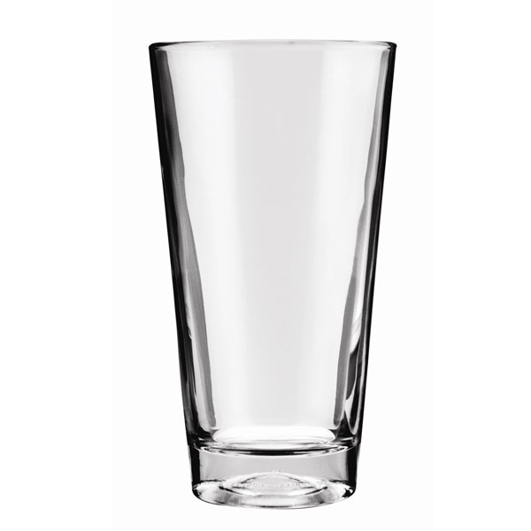16 oz. Mixing glassThe mixing glass is a very important tool since most of the cocktails are build in it. It is a part of the Boston Shaker and it is used for stirred cocktails in combination with the julep strainer.
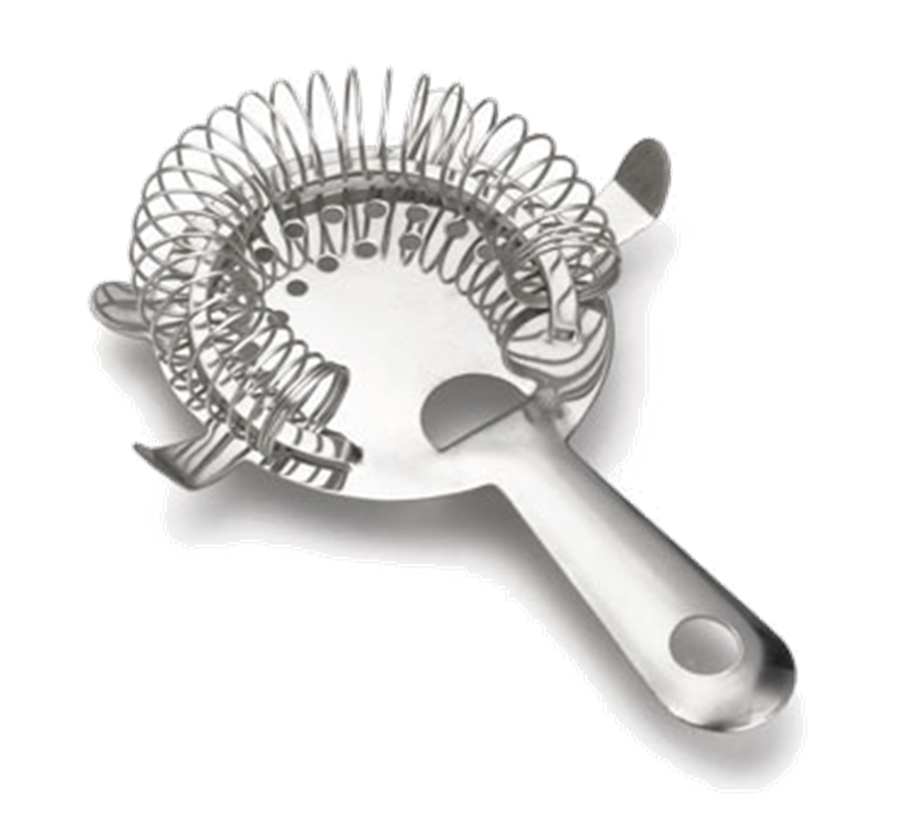Hawthorne or Spring StrainerHawthorne or Spring Strainer is a strainer fitted with a spring around it that fits perfectly on the 22 oz. metal part of the Boston shaker. It’s used to strain shaken cocktails or martinis that are poured form the aforementioned shaker. Please use it only in combination with the 22 oz. Metal part.
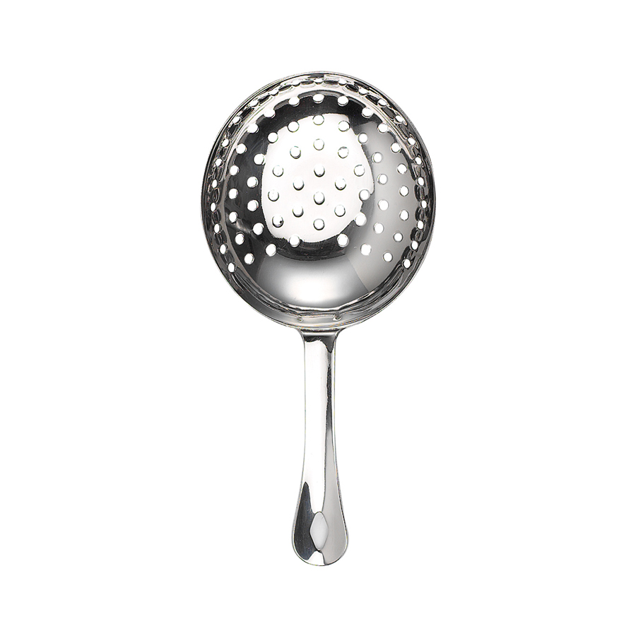Julep StrainerJulep strainer is a large perforated spoon that fits the other part of the Boston Shaker – the 16 oz. Mixing glass. It is used to strain stirred Cocktails or martinis and like its namesake juleps-cocktails containing mint.
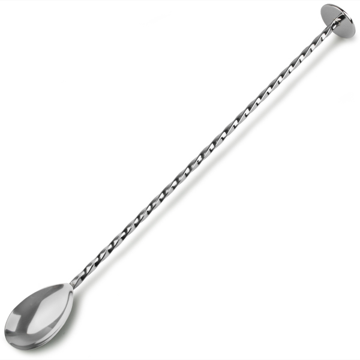Bar SpoonBar Spoon is a 12-inch long spoon with a twisted handle in a spiral that is used as a tool for stirring. This tool is also used to handle garnishes at the bar and could be used as measuring device. We recommend this spoon for stirring since its spiraled handle can be slightly curved by hand thus enabling it to move the whole amount of ice at once through the mixing glass.
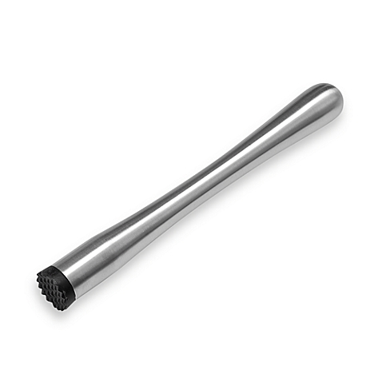MuddlerA bar tool used to crush fruits, herbs and sugar. It should be at least 8 inches long to reach the bottom of the mixing glass. Cocktails that require the use of a muddler include: Mojito made with light rum, Caipirinha made with cachaça, Caipiroska made with vodka, Mint julep made with Bourbon whiskey.
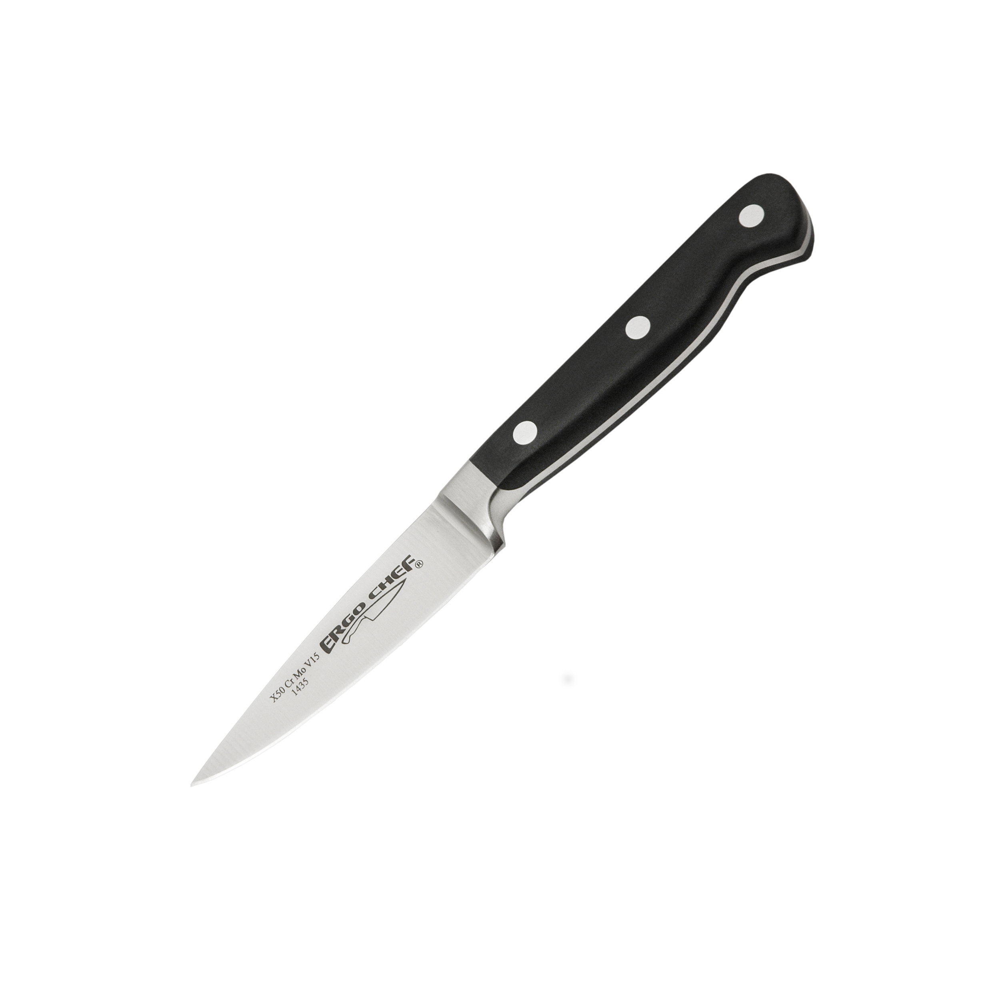Paring KnifeParing knife is a short blade knife that should be kept very, very sharp. It’s used to cut garnishes (fruits and twists for your bar. Use it for any job that requires precise and delicate work.
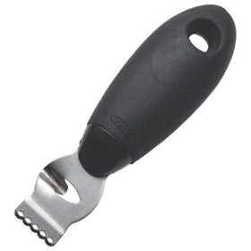Citrus ZesterCitrus zester is a tool used to cut long stripes of zest from oranges or lemons. It has a unique shape that helps to perfectly extract the desired length of the zest.
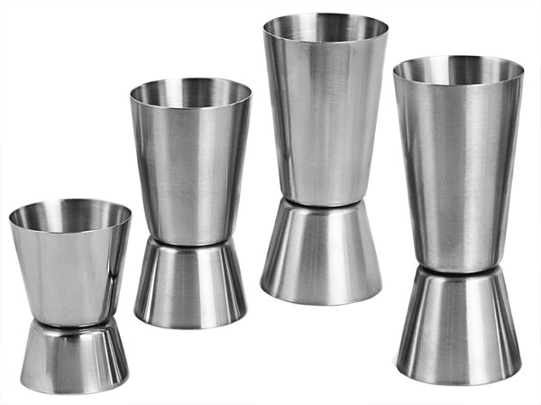JiggersJiggers are tools used for measuring the amount of liquid that is about to be poured into a cocktail or martini. They look like two cones joined together on their points and come in different sizes from ¼ oz. –2 ½ oz. In classic bartending jiggers are the only measuring tools.
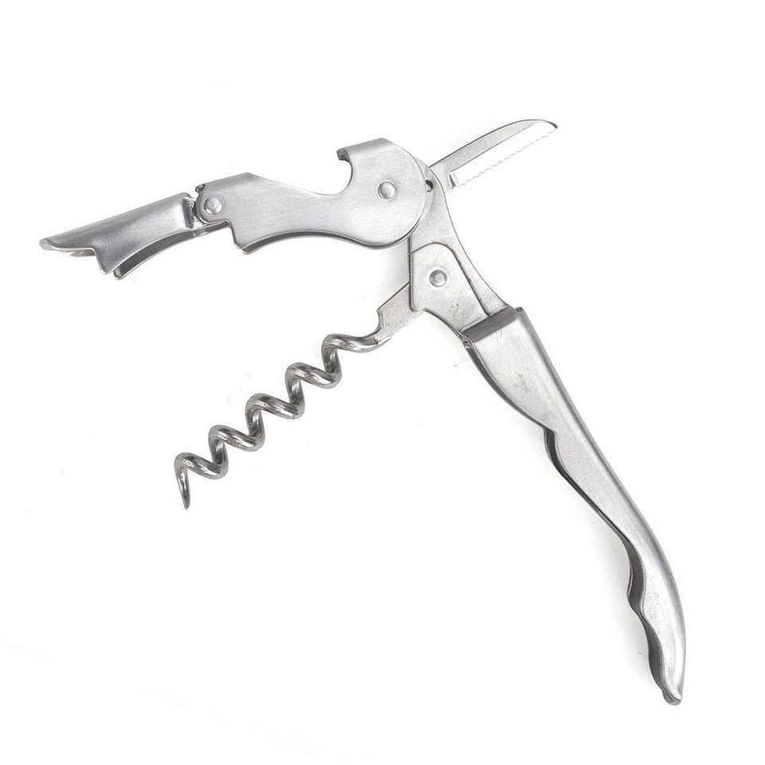Wine OpenerWine openers come in a lot of different shapes and looks but we suggest you acquire one that has a two stage opening process. It is more efficient behind the bar and helps in many cases preserve the corks since especially French wines tend to have longer corks.
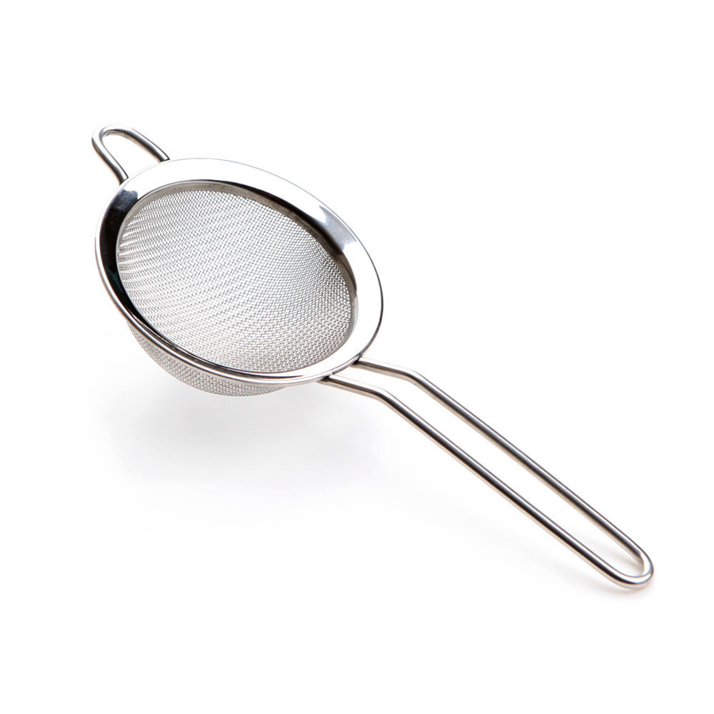Fine SieveThis tool is used for double straining some cocktails notably martinis and cocktails that are muddled but served straight up and who therefore contain too much pulp and fruit residue. A sieve is also very handy when making home made ingredients, infusions and syrups.
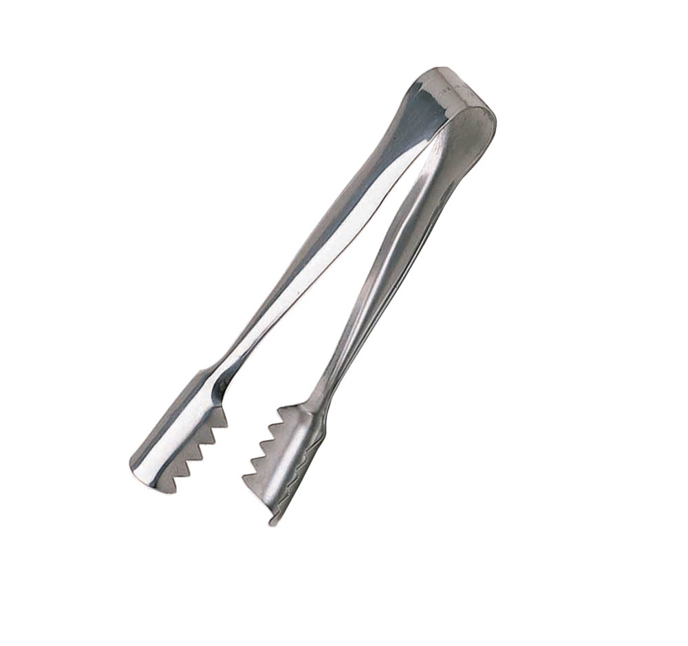TongsThis tool is used predominantly for handling ice, garnish and fruits. Although many bartenders need not, or are not used to using them, The Health Department requires handling fruit and ice with a medium (gloves or Thongs). It also looks more professional when a bartender is handling items using this tool.
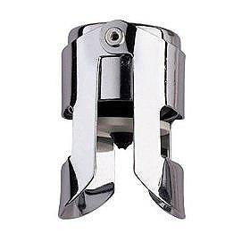Champagne Stopper or CapVery important tool for trying to save some sparkling wine for next day service, which will be very, very difficult if not impossible if the level of liquid in the bottle you are trying to save is below the half mark line. Unfortunately even if you manage to save some wine for the next day it will probably be good for only one serving before it completely dies. Give it a try though – it won’t hurt.
Shaking is a technique used to chill a cocktail or martini by adding water and air in it. Water is a very, very important balancing ingredient in every cocktail-martini and the right amount of it makes all the difference. Too much and the cocktail-martini will be to “watery” – too little and you’ll have an unbalanced cocktail that will be almost undrinkable.
When you are done with pouring, add ice to the mixing glass, or if there is no space for the right amount just scoop the ice with the metal shaker and close in a quick move the two parts together. Remember that your ice is in this case an ingredient. The colder and bigger the ice cubes are the longer you need to shake the cocktail in order to achieve the right balance.
It is very important to shake every cocktail as hard as you only can. Hold the mixing glass with your left hand, close the mixing glass with the metal shaker that you hold in your right hand and hit the bottom of the metal shaker so the seal is tight. Than flip the shaker around so that the metal part is standing on the working level. Hold the metal shaker with your left hand and with your right hand hold the mixing glass so that the middle finger is filling up the gap between the metal part and the glass. Remember, a good shake is possible only when using both hands. Lift the shaker; place it parallel to the line going straight from your right ear to your right eye. Start shaking in a steady rhythm but very aggressive. A cocktail should be shaken no longer than 8 seconds depending on the size of your ice. Please note that the quality of ice is extremely important – larger ice cubes the ones that we tend to make at home are colder and melt slower so you will need to shake them 26 longer and harder to add the same amount of water as with smaller ice cubes that we usually find in restaurant bars. When done with shaking, remove the mixing glass from the metal shaker, put the strainer on top of it and pour the cocktail in the prepared martini-cocktail glass. There are cocktails that require the pour out of the mixing glass. In that case you need to use the julep strainer.